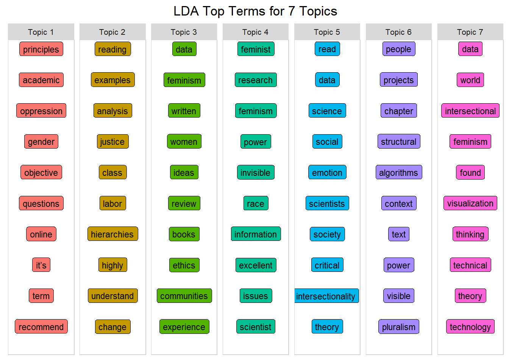
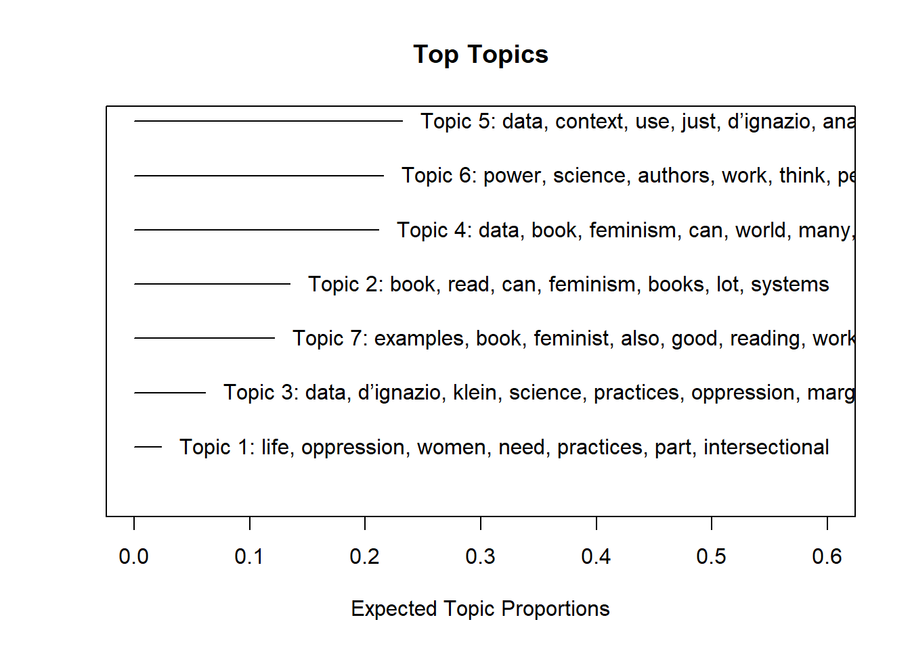
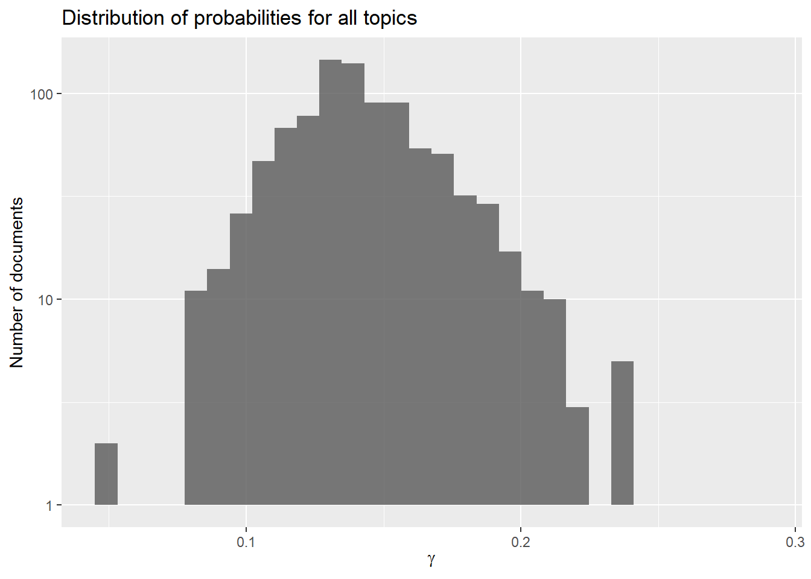

#Install packages for wrangling
library(tidyverse)
# install packages for reading data
library(writexl)
library(readxl)
library(tidytext)
library(textdata)
#install Packages for Topic Modleing
library(tm)
library(SnowballC)
library(topicmodels)
library(ldatuning)
library(stm)
# for visualizations
library(scales)
library(wordcloud2)
library(gridExtra)
library(knitr)
library(kableExtra)
library(formattable)
library(yarrr)
library(LDAvis)
library(ggrepel)
#define colors to use throughout
my_colors <- c("#E69F00", "#56B4E9", "#009E73", "#CC79A7", "#D55E00", "#D65E00")
#define theme plot used throughout
theme_plot <- function(aticks = element_blank(),
pgminor = element_blank(),
lt = element_blank(),
lp = "none")
{
theme(plot.title = element_text(hjust = 0.5), #center the title
axis.ticks = aticks, #set axis ticks to on or off
panel.grid.minor = pgminor, #turn on or off the minor grid lines
legend.title = lt, #turn on or off the legend title
legend.position = lp) #turn on or off the legend
}Investigating book reviews of the Data Feminism book
A topic modeling approach
1 PURPOSE
To inspect book reviews on Data Feminism using a Topic Modleing Technique
1a. Motivation and Focus
A few years back, I remember reading a publication by Din-Kariuki (2015) written about feminist initiatives in University. Dan-Kariuki (2015) emphasized the importance of “conversations about race, class, disability, sexuality, and other axes of oppression” within women experiences. Kimberlé Crenshaw’s 1989 term intersectionality focuses on “the interconnected nature of social categorizations such as race, class, and gender as they apply to a given individual or group, regarded as creating overlapping and interdependent systems of discrimination or disadvantage” (Cooper, 2016). Connecting intersectionality and feminism, Din-Kariuki (2015) states, “as far as sexism is concerned, women from different segments of society are oppressed to different extents and in different ways” grounding that as intersectional feminism. A new book on feminism has emerged, Data Feminism first published on March 16, 2020, by Catherine D’Ignazio and Lauren Klein, set forth seven principles with an intersectional feminist lens to examine unequal power structures in data.
Seven Principles from Data Feminism book: - Examine power - Challenge power - Work towards justice. - Elevate emotion & embodiment - Rethink binaries & hierarchies - Embrace pluralism - Consider context - Make labor visible
The authors include literature about and written by members of the LGBTQ+ community, people of color, previously colonized nations, and indigenous communities. Like Dan-Kariuki’s (2015) article, Data Feminism highlights that feminism is not only about the female gender and grounded in intersectional feminism. Touting that data feminism isn’t only for women but for males, non-binary and genderqueer to use in their work.
After recently completing a N-gram analysis from Twitter hashtags like #DataFemisim, I wanted to learn more about what others might be saying about the book Data Feminism. Or even how they might be using the framework in their work. Since the book is relatively new, I wasn’t sure a literature review would give me a good sense of Data Feminism . I decided to look at book reviews from Amazon, Goodreads, and blogs through a Google search. Guiding my analysis are the following questions:
- Can we quantify the words between Data Feminism book review sites and are they statistically significant?
- Can a topic modeling analysis on Data Feminism book reviews reveal topics or trends on the framework principles?
1b. Load Libraries
First, let’s load the libraries needed to wrangle, the data. Since we are doing an Unsupervised Machine Learning technique called Topic Modeling we will be using packages specifically for that analysis.
2 Method
2a. Webscraping and pulling data to engineered dataset
Using customer reviews as an analysis is not new. Companys use manual and AI analysis of Amazon reviews to help drive change, Bag-of-words approach, and look at term frequencies across all reviews (Bussler, 2021). Looking closely at a Google Search, I found book reviews from Goodreads.com, Amazon.com, and a few online platforms in the form of blogs. The criteria used was that it must denote a book review on only the Data Feminism book. I categorized the blogs into an “other” category; although not copious, the reviews equaled 134.
- Good Reads Reviews: 104
- Amazon book reviews: 22
- Other: 12
I tried a web scraping technique and partial copy and paste for this analysis. To web scrape, I installed Selector Gadget an open-source Chrome Extension to quickly identify CSS/Xpath selection. I was able to scrape the first page of Goodreads but could not get my loop to work on crawling the other pages. While scraping Goodreads reviews, my script pulled duplicates of some of the reviews, but only the first paragraph and only the first line in some instances. I used a separate script on the Amazon reviews after collecting the ASIN number. I ended up Tidying the data frames in excel since i had to go threw and delete the duplicates manually. Finally, I went through the Google Search, looking for Blogs that came up in my search (“Data Feminism” AND “Book Review”).
2b. Read and Restructure Data
Let’s read in the data and only inspect the first two since some of the reviews are a few pages. The data frame looks pretty good and tidy, so there will not be much wrangling of the data. I want to add a unique identifier for later analysis. We see that we have 134 observations with five variables. We are going to add a unique identifier with rowid_to column() function.
#read in previously scraped data
df_reviews <- read_excel("data/result_df_p1 (3).xlsx")
df_reviews <- tibble::rowid_to_column(df_reviews, "index") #add unique identifier
df_reviews %>%
head(n=2)%>%
kbl(caption = "Restructured Data - tidy_tweets data frame") %>%
kable_styling(bootstrap_options = c("striped", "hover"))| index | name | year | review | site | book |
|---|---|---|---|---|---|
| 1 | Sanjida | Jan 08, 2021 | A new way of thinking about data science and data ethics that is informed by the ideas of intersectional feminism.Today, data science is a form of power. It has been used to expose injustice, improve health outcomes, and topple governments. But it has also been used to discriminate, police, and surveil. This potential for good, on the one hand, and harm, on the other, makes it essential to ask: Data science by whom? Data science for whom? Data science with whose interests in mind? The narratives around big data and data science are overwhelmingly white, male, and techno-heroic. In Data Feminism, Catherine D'Ignazio and Lauren Klein present a new way of thinking about data science and data ethics—one that is informed by intersectional feminist thought.Illustrating data feminism in action, D'Ignazio and Klein show how challenges to the male/female binary can help challenge other hierarchical (and empirically wrong) classification systems. They explain how, for example, an understanding of emotion can expand our ideas about effective data visualization, and how the concept of invisible labor can expose the significant human efforts required by our automated systems. And they show why the data never, ever “speak for themselves.”Data Feminism offers strategies for data scientists seeking to learn how feminism can help them work toward justice, and for feminists who want to focus their efforts on the growing field of data science. But Data Feminism is about much more than gender. It is about power, about who has it and who doesn't, and about how those differentials of power can be challenged and changed. | Good Reads | data feminism |
| 2 | Harsh | Nov 05, 2020 | The authors of this book want us to be aware of our positionality, so I'll tell you that I've been a scientist in the field of genetics for over 20 years, more recently as a curator and manager of delivering data to the public. I'm also a woman of color who thinks a lot about ethics and equity. Which is to say, I really try to think critically about data, scientific and otherwise. I take this book literally. I fully agree that we need to look at what biases lay behind the hypotheses and interpretations of studies. I think scientists need to be clear in what parameters and variables are actually being measured, and whether it's meaningful to use certain categories at all (for instance, in my field, US racial categories are not very meaningful, and their use often obscures conclusions from data). I think it's important to define your terms, be as precise as you can and aware of how shorthand labels may mislead. I think we should consider what blindspots we may have, especially when doing research that impacts people and societies. And that interactions on an equal standing with people with different perspectives (professional and personal backgrounds) can help point out these blindspots. I think we should interrogate why certain jobs in STEM projects (e.g. curator vs data scientist) have more or less prestige, and what that says about our society. Therefore, I largely agree with the recommendations, such as they are, of this book. But I can't take this book seriously, because it frames these concepts, which I consider simply good practice, as feminism (by feminism, they mean an intersection of a gender+racial+class justice lens). Maybe I'm too much of a consequentialist, but my kneejerk reaction to this book was to reject putting the fetishization of identity ahead of practice. I was also hoping for more insights that would help in my professional life. Disappointingly, rather than give precise scenarios of study and analysis design, the authors tend to rely on quotes from feminist scholars they think are cool, and then shout out examples of research they like (i.e. done by people who they approve of) versus stuff they don't like (done by people they don't like). I kept thinking of data scientists I work with, many of them older men who didn't grow up in the US, and how I would love to recommend a book like this to them, so that they would think deeper about responsible use of data. But this book doesn't provide an accessible entry into this subject. I know the authors workshopped this manuscript - I just wish that in addition to consulting gender and cultural scholars, they had also been more intentional about running this work past more normies, maybe some of the ones who they mention were initially hostile to their project. Critical comments from that perspective would likely have resulted in a stronger product. | Good Reads | data feminism |
2c. Tidy Text format
Next, we will tidy our text using the tidytext and dplyr packages to split the text into tokens creating a table with one token per row. The token is under a column called word(). Another step to tidy the text is to remove the most common stop words such as a, the, is, are, and, etc. As mentioned previously, “art” is commonly connected to Canvas; therefore, we need to filter out “art.” We will take another look at the head of our tokenized text.
#tokenize review words and keep all columns
review_tidy<- df_reviews %>%
unnest_tokens(word, review) %>%
anti_join(stop_words)%>%
select(name, everything()) %>%
unite(review, site, index)
review_tidy# A tibble: 12,441 × 5
name review year book word
<chr> <chr> <chr> <chr> <chr>
1 Sanjida Good Reads_1 Jan 08, 2021 data feminism thinking
2 Sanjida Good Reads_1 Jan 08, 2021 data feminism data
3 Sanjida Good Reads_1 Jan 08, 2021 data feminism science
4 Sanjida Good Reads_1 Jan 08, 2021 data feminism data
5 Sanjida Good Reads_1 Jan 08, 2021 data feminism ethics
6 Sanjida Good Reads_1 Jan 08, 2021 data feminism informed
7 Sanjida Good Reads_1 Jan 08, 2021 data feminism ideas
8 Sanjida Good Reads_1 Jan 08, 2021 data feminism intersectional
9 Sanjida Good Reads_1 Jan 08, 2021 data feminism feminism.today
10 Sanjida Good Reads_1 Jan 08, 2021 data feminism data
# … with 12,431 more rows2d. Word frequencies
The simplest word frequency analysis assesses the most common words in a text. We can use count to determine the most common words across all the text in the reviews on Data Feminism. Let’s quickly look at the word counts and then the frequencies across each site to see if reviewers use the same type of language to evaluate Data Feminism.
We can see that “data,” “feminism,” and “book” are a few of the most popular words used in the Data Feminism book reviews. This make sense since the book’s title is “Data Feminism”. We also see the authors names and “science” as top words.
#show top 10 words across all review sites
review_tidy %>%
count(word, sort = TRUE) %>%
filter(n > 70) %>%
mutate(word = reorder(word, n)) %>%
ggplot(aes(n, word)) +
geom_col() +
labs(y = NULL)Before we go on, let us also get a better sense of how the word ’people is being used since it is in our top words. Wow, we see there are thirty-four reviews with the word people mentioned. Since many are long, let’s inspect three reviews using ggrepl().
The first review proposes clarity for parameters and variables of measurment siting, “I think we should consider what blindspots we may have, especially when doing research that impacts people and societies.” The second review questions who the book audience should be stating, “If it’s people with a background in feminist/intersectionality theory, it’s fundamentally pretty basic info (although the examples used to illustrate them are certainly interesting, albeit a few have that undergrad “I randomly picked something to use as an example in my paper and it’s due tomorrow so we’re just going with it ok” vibe). The third review uses people in a broad sense of description from mentions in the book, “It falls back to a depressingly-liberal theory of change after hitting the nail on the head about all sorts of stuff, even going so far as to quote people that certainly (and correctly) had more radical prescriptions about what to do with all this.
review_tidy_people <- df_reviews %>%
select(review) %>%
filter(grepl('people', review))
review_tidy_people %>%
head(n=3)%>%
kbl(caption = "Three reviews include the word 'people'") %>%
kable_styling(bootstrap_options = c("striped", "hover"))| review |
|---|
| The authors of this book want us to be aware of our positionality, so I'll tell you that I've been a scientist in the field of genetics for over 20 years, more recently as a curator and manager of delivering data to the public. I'm also a woman of color who thinks a lot about ethics and equity. Which is to say, I really try to think critically about data, scientific and otherwise. I take this book literally. I fully agree that we need to look at what biases lay behind the hypotheses and interpretations of studies. I think scientists need to be clear in what parameters and variables are actually being measured, and whether it's meaningful to use certain categories at all (for instance, in my field, US racial categories are not very meaningful, and their use often obscures conclusions from data). I think it's important to define your terms, be as precise as you can and aware of how shorthand labels may mislead. I think we should consider what blindspots we may have, especially when doing research that impacts people and societies. And that interactions on an equal standing with people with different perspectives (professional and personal backgrounds) can help point out these blindspots. I think we should interrogate why certain jobs in STEM projects (e.g. curator vs data scientist) have more or less prestige, and what that says about our society. Therefore, I largely agree with the recommendations, such as they are, of this book. But I can't take this book seriously, because it frames these concepts, which I consider simply good practice, as feminism (by feminism, they mean an intersection of a gender+racial+class justice lens). Maybe I'm too much of a consequentialist, but my kneejerk reaction to this book was to reject putting the fetishization of identity ahead of practice. I was also hoping for more insights that would help in my professional life. Disappointingly, rather than give precise scenarios of study and analysis design, the authors tend to rely on quotes from feminist scholars they think are cool, and then shout out examples of research they like (i.e. done by people who they approve of) versus stuff they don't like (done by people they don't like). I kept thinking of data scientists I work with, many of them older men who didn't grow up in the US, and how I would love to recommend a book like this to them, so that they would think deeper about responsible use of data. But this book doesn't provide an accessible entry into this subject. I know the authors workshopped this manuscript - I just wish that in addition to consulting gender and cultural scholars, they had also been more intentional about running this work past more normies, maybe some of the ones who they mention were initially hostile to their project. Critical comments from that perspective would likely have resulted in a stronger product. |
| This is a great read, overall -- thoughtful conceptual framework, well-used theory, a great message and a lively tone. I certainly found some beautiful lines/quotations and great new formulations for how to think & speak about these topics in my workplace -- My main question mark about it is that I'm not entirely sure who the audience is. If it's people with a background in feminist/intersectionality theory, it's fundamentally pretty basic info (although the examples used to illustrate them are certainly interesting, albeit a few have that undergrad "I randomly picked something to use as an example in my paper and it's due tomorrow so we're just going with it ok" vibe). If it's data scientists who don't care about intersectionality, my suspicion is that it won't convince them. But if you're somewhere in the middle, or on one side with an interest in the other, I'm sure you'll pick at least something useful up! |
| Ironically, this book is potentially more harmful than something which is less correct in its diagnosis of the problems associated to data science and data collection writ large.This book repeatedly gets lots of things right, in terms of describing the problems that we see: the biases associated to data collection, the biases inherent in having machine learning systems developed by unrepresentative groups, the ways in which systems and data collection can reinforce existing (malicious) power structures, the racist / sexist epistemic assumptions baked into data collection / analysis, etc. It even goes so far as to make correct claims about the politics: the ineffective nature of white saviorism, education as not necessarily an emancipatory force, the existence of power dynamics that preclude political action, etc.Then what?! It ultimately leaves any of the broader structural analysis at the roadside (racial capitalism, the particular history and economics of the way that data science is used in our modern capitalist system, etc.), and gives a broad guide about how "we" ought to be teaching data science. It falls back to a depressingly-liberal theory of change after hitting the nail on the head about all sorts of stuff, even going so far as to quote people that _certainly_ (and correctly) had more radical prescriptions about what to do with all this.The word "capitalism" appears exactly 3 times in this entire 200 page text, and only in passing, which might just summarize the problem with the whole damned thing. If it were wrong, we could maybe dismiss it more easily, and therein lies the danger. |
2e-i. Permulation of Word Frequency
Let’s compare the word frequencies between Goodreads.com, Amazon.com, and the other category for book reviews.
Words close to the line in the plots have similar frequencies across all the review sites.
For example, words such as “data,” “book,” and “D’Ignazio” are relatively common and used with similar frequencies across most of the reviews. Words that are far from the line are found more in one review site than the other. Furthermore, words standing out above the line are shared across the review sites but not within that particular review site. For instance, “science” stands out above the line on the Amazon review site. This means that “science” is reasonably common across the entire review site but is not used as much on the Amazon review site. Words below the line are common in that review site but not across the whole site. The only one sticking out below the bar is on the Amazon site and is the number twelve.
# calculate percent of word use across all novels
tf_review<- review_tidy %>%
anti_join(stop_words) %>%
count(word) %>%
transmute(word, all_words = n / sum(n))
# calculate percent of word use within each review
sf_review <- review_tidy %>%
separate(review, c("site", "index"),
sep = "_", convert = TRUE)%>%
anti_join(stop_words) %>%
count(site, word) %>%
mutate(site_words = n / sum(n)) %>%
left_join(tf_review) %>%
arrange(desc(site_words)) %>%
ungroup()
sf_review %>%
head(n= 10)%>%
kbl(caption = "Top words and their frequency across each review site ") %>%
kable_styling(bootstrap_options = c("striped", "hover"))| site | word | n | site_words | all_words |
|---|---|---|---|---|
| other | data | 387 | 0.0311068 | 0.0636605 |
| Good Reads | data | 370 | 0.0297404 | 0.0636605 |
| Good Reads | book | 163 | 0.0131018 | 0.0207379 |
| other | power | 83 | 0.0066715 | 0.0101278 |
| other | feminism | 78 | 0.0062696 | 0.0128607 |
| Good Reads | science | 76 | 0.0061088 | 0.0120569 |
| Good Reads | feminism | 71 | 0.0057069 | 0.0128607 |
| other | book | 64 | 0.0051443 | 0.0207379 |
| other | science | 62 | 0.0049835 | 0.0120569 |
| Good Reads | read | 59 | 0.0047424 | 0.0063500 |
ggplot(sf_review, aes(x = site_words, y = all_words, color = abs(all_words - site_words))) +
geom_abline(color = "gray40", lty = 2) +
geom_jitter(alpha = 0.1, size = 2.5, width = 0.3, height = 0.3) +
geom_text(aes(label = word), check_overlap = TRUE, vjust = 1.5) +
scale_x_log10(labels = scales::percent_format()) +
scale_y_log10(labels = scales::percent_format()) +
scale_color_gradient(limits = c(0, 0.001), low = "darkslategray4", high = "gray75") +
facet_wrap(~ site, ncol = 2) +
theme(legend.position="none") +
labs(y = "Data Feminism Review word frequency", x = NULL)2e-ii. Statistical Significance
To answer our first research question, “Can we quantify the word frequencies used between the sites on Data Feminism book reviews?” We must look at how correlated the word frequencies between the entire review sites and each separate review site are. We can quantify this with a correlation test to see if the numbers are statistically significant.
- Looks like high correlations between sites, which are statistically significant at p <.05, suggesting that the relationship between the word frequencies is highly similar across the reviews on the review sites.
sf_review %>%
group_by(site) %>%
summarize(correlation = cor(site_words, all_words),
p_value = cor.test(site_words, all_words)$p.value)# A tibble: 3 × 3
site correlation p_value
<chr> <dbl> <dbl>
1 Amazon 0.868 2.43e-128
2 Good Reads 0.982 0
3 other 0.975 0 2f. Document Term Matrix
To answer our other research questions, we will have to perform an Unsupervised modeling technique topic modeling to see if we can understand themes from the book reviews combined.
We will treat each individual review as a unique “document.” first, we need to create a Document Term Matrix (dtm). Using the count() function for how many times each word occurs in each document or index in our case. Then create a matrix that contains one row per post as our original data frame did, but now includes a column for each word in the entire corpus and a value of n for how many times that word occurs in each post. I decided to combine the site name, index number and review.
Additionally, I decided to remove the authors names, “book,” and the word “authors.” We know that these will be prevalent and do not provide new insight for this analysis.
We see that our document term matrix has 133 documents and 3785 terms with a sparsity of 98%. Great!
# tokenize our reviews text (this is the same step we did in wrangle but don't include every variable)
review_tidy <- df_reviews %>%
unnest_tokens(output = word, input = review) %>%
anti_join(stop_words, by = "word") %>%
select(name, everything()) %>%
unite(review, site, index)
#my_stop_words
my_stop_words <- bind_rows(stop_words,
tibble(word = c("dignazio","d ignazio","d'ignazio","D’Ignazio",
"klein", "catherine","book","lauren", "author", "authors",
as.character(1:12),lexicon =rep("custom", 30))))
word_counts <- review_tidy %>%
anti_join(my_stop_words) %>%
count(review, word, sort = TRUE)%>%
ungroup()
#create dtm
research_dtm <- word_counts %>%
count(review, word) %>%
cast_dtm(review, word, n) %>%
print()<<DocumentTermMatrix (documents: 133, terms: 3785)>>
Non-/sparse entries: 8972/494433
Sparsity : 98%
Maximal term length: 30
Weighting : term frequency (tf)3 Model
We need to pull out the topics from each document with our mixture model and try and locate a good K-Means number.
3a. Finding K
I do not have a good idea of how many topics might be within the reviews. Bail(2018) notes, “the results of topic models should not be over-interpreted unless the researcher has strong theoretical apriori about the number of topics in a given corpus.”
I will try and flesh out topics with a few finding K value techniques: - a-i. n_distinct() function from the dplyr package to find the number of unique site names in our book review data. - a-ii. Use the ldatuning package to calculate and plot the preferable number of topics for the LDA model. - a-iii. Try the toLDAvis() function, which provides great visualizations for exploring the topic and word distributions using the LDAvis topic browser.
a-i. The n_distinct method.
The n_distinct () function shows us that there are three unique site names.We divided up our reviews into three categories under the variable “site.” I am not sure that three topics will provide much insight. Let us look at two other ways to find topic counts.
n_distinct(df_reviews$site)[1] 3a-ii. ldatuning Package method
We use the FindTopicsNumber to find topics using the research_dtm for a sequence of 5-50, counting by 5. Trying different sequences gave me the same Griffiths2004 metric results with an inflection point at 10. Now let’s look at the LDAvis method.
k_metrics <- FindTopicsNumber(
research_dtm,
topics = seq(05, 50, by = 5),
metrics = "Griffiths2004",
method = "Gibbs",
control = list(),
mc.cores = NA,
return_models = FALSE,
verbose = FALSE,
libpath = NULL
)
FindTopicsNumber_plot(k_metrics)a-iii. LDAvis method
Another technique we will use is the LDAvis visualization, which shows us whether topics are overlapping and by how much. This technique uses the structured topic model, First nwe will run the STM unsupervised model before running the LDAvis model. We will use ten as the topic number we got from the Griffiths2014 metric.
temp <- textProcessor(df_reviews$review,
metadata = df_reviews,
lowercase=TRUE,
removestopwords=TRUE,
removenumbers=TRUE,
removepunctuation=TRUE,
wordLengths=c(3,Inf),
stem=TRUE,
onlycharacter= FALSE,
striphtml=TRUE,
customstopwords=NULL)Building corpus...
Converting to Lower Case...
Removing punctuation...
Removing stopwords...
Removing numbers...
Stemming...
Creating Output... docs <- temp$documents
meta <- temp$meta
vocab <- temp$vocab
review_stm <- stm(documents=docs,
data=meta,
vocab=vocab,
prevalence =~ index,
K=10,
max.em.its=25,
verbose = FALSE)
review_stmA topic model with 10 topics, 134 documents and a 3010 word dictionary.When we run the LDAvis, we can see that there are a few overlapping topics. When I ran higher numbers there was severe overlap within the topics. Here we are not seeing that, which means we should be able to identify topics or themes.
toLDAvis(mod = review_stm, docs = docs)
3b. Fit LDA model for analysis
I started with K= 10 topics but decided to reduce the number to seven after many attmempts in understanding the topics. Seven seemed to be the most identifiable number.
Let’s fit the LDA model with ten topics to a Latent Dirichlet Allocation (LDA) topic modeling technique to extract topics from the corpus.
k <- 7 #number of topics
seed = 1234 #necessary for reproducibility
#fit the model
#you could have more control parameters but will just use seed here
review_lda <- LDA(research_dtm, k = k, method = "GIBBS", control = list(seed = seed))4 Explore
4a. Beta terms
Looking at Beta occurrence for each term we can see some overarching themes. But let’s compare this to the STM model as well to see if there are similaritites before “reading the Tea Leaves.”
word_chart <- function(data, input, title) {
data %>%
#set y = 1 to just plot one variable and use word as the label
ggplot(aes(as.factor(row), 1, label = input, fill = factor(topic) )) +
#you want the words, not the points
geom_point(color = "transparent") +
#make sure the labels don't overlap
geom_label_repel(nudge_x = .1,
direction = "y",
box.padding = 0.1,
segment.color = "transparent",
size = 3) +
facet_grid(~topic) +
theme_plot() +
theme(axis.text.y = element_blank(), axis.text.x = element_blank(),
#axis.title.x = element_text(size = 9),
panel.grid = element_blank(), panel.background = element_blank(),
panel.border = element_rect("lightgray", fill = NA),
strip.text.x = element_text(size = 8)) +
labs(x = NULL, y = NULL, title = title) +
#xlab(NULL) + ylab(NULL) +
#ggtitle(title) +
coord_flip()
}
num_words <- 10 #number of words to visualize
#create function that accepts the lda model and num word to display
top_terms_per_topic <- function(lda_model, num_words) {
#tidy LDA object to get word, topic, and probability (beta)
topics_tidy <- tidy(lda_model, matrix = "beta")
top_terms <- topics_tidy %>%
group_by(topic) %>%
arrange(topic, desc(beta)) %>%
#get the top num_words PER topic
slice(seq_len(num_words)) %>%
arrange(topic, beta) %>%
#row is required for the word_chart() function
mutate(row = row_number()) %>%
ungroup() %>%
#add the word Topic to the topic labels
mutate(topic = paste("Topic", topic, sep = " "))
#create a title to pass to word_chart
title <- paste("LDA Top Terms for", k, "Topics")
#call the word_chart function
word_chart(top_terms, top_terms$term, title)
}
top_terms_per_topic(review_lda, num_words)
STM Model
The STM model has a lot of words that we will need to go back and take out. Otherwise the themes here are overlapping and hard to make out. Mainly that we should read the Data Feminism book by D’Ignazio and Klein. Topic one could have an overarching theme about integrating the practices of intersectional Data Feminism. Which is similar to the topic for number 7 in our LDA model.
temp <- textProcessor(df_reviews$review,
metadata = df_reviews,
lowercase=TRUE,
removestopwords=TRUE,
removenumbers=TRUE,
removepunctuation=TRUE,
wordLengths=c(3,Inf),
stem=FALSE,
onlycharacter= FALSE,
striphtml=TRUE,
customstopwords=TRUE)Building corpus...
Converting to Lower Case...
Removing punctuation...
Removing stopwords...
Remove Custom Stopwords...
Removing numbers...
Creating Output... docs <- temp$documents
meta <- temp$meta
vocab <- temp$vocab
review_stm <- stm(documents=docs,
data=meta,
vocab=vocab,
prevalence =~ index,
K=7,
max.em.its=25,
verbose = FALSE)
plot(review_stm, type = "summary", xlim = c(0, 0.6), n= 7)
4b. Investigating term within a topic - Beta
As Siles(2015) explains we will use Beta to tell us the probability of that term being generated from that topic for that document and visualize it. We can see the dominant word “data” is in the book reviews.
# tidy the lda model
tidy_lda <- tidy(review_lda)
#get the data into top 6 terms
top_terms <- tidy_lda %>%
group_by(topic)%>%
slice_max(beta, n = 6, with_ties = FALSE) %>%
ungroup()%>%
arrange(topic, -beta)
#visualize top ten terms within each topic
top_terms %>%
mutate(topic = factor(topic),
term = reorder_within(term, beta, topic)) %>%
ggplot(aes(term, beta, fill = log(beta))) +
geom_bar(stat = "identity", show.legend = FALSE, color= "grey20", size= 0.2) +
scale_x_reordered() +
facet_wrap(~ topic, scales = "free", ncol = 3) +
coord_flip() +
scale_fill_distiller(palette = "RdYlBu") +
theme(legend.position = 'none',
panel.grid = element_blank(),
axis.text.y = element_text(size= 10),
axis.text.x = element_blank(),
plot.margin = margin(0.5, 1, 0.5, 0.5, "cm")) +
labs(title= "Top 6 terms in each LDA topic", x= (NULL), y= expression(beta))4c. Investigate the topics associated with each index number(book review).
- We can do this by looking at the “gamma” probability that each topic belongs in each topic. We can’t use the “site”variable because it will not give us the unique reviews. After our model has assigned the probability to each of the topics we can visualize the distribution of probabilities to all topics.
lda_gamma <- tidy(review_lda, matrix = "gamma")
ggplot(lda_gamma, aes(gamma)) +
geom_histogram(alpha = 0.8) +
scale_y_log10() +
labs(title = "Distribution of probabilities for all topics",
y = "Number of documents", x = expression(gamma))
- Also, we can also visualize how the probabilities are distribution within each individual topic. It looks like Topic 4 has probablities that do not belong in the topic and none that do. We are looking for documents closer to 1 that are discriminate as belonging to a topic or not. Since we do not see that they are sorted nicely we will run a a model that shows how our model did at sorting the topics from each book review site.
site_gamma <- lda_gamma %>%
separate(document, c("site", "index"), sep = "_", convert = TRUE)
ggplot(site_gamma, aes(gamma, fill = as.factor(topic))) +
geom_histogram(alpha = .6, show.legend = FALSE, bins=10) +
scale_y_log10() +
facet_wrap(~topic, scales = "free") +
labs(title = "Distribution of probability for each topic",
y = "Number of documents", x = expression(gamma))4d.
We can check our per-document-per-topic probabilities to see how well our unsupervised learning did at distinguishing the three site containg book reviews.
We notice that almost all of the reviews from Amazon, and the blog sites(“other”) were almost always uniquely identified as a single topic. Ther is some variance but it looks like more reviews from the Goodreads site were somewhat associated with other topics.
site_gamma <- lda_gamma %>%
separate(document, c("site", "index"), sep = "_", convert = TRUE)
# re-rank top topic terms for topic names
site_gamma %>%
mutate(Site = reorder(site, gamma * topic)) %>%
ggplot(aes(factor(topic), gamma)) +
geom_boxplot() +
facet_wrap(~ site) +
labs(x = "topic", y = expression(gamma))4e. tSNE Clustering Terms in 2-Dimensional Space
Lets use a t-SNE (t-distributed stochastic neighbor) model to can see the distance between each topics and which ones tend to cluster together.
We can see that there are several topics clustering together in two main groups.
topicLabels<- top_terms %>%
ungroup() %>%
arrange(topic, desc(beta)) %>%
group_by(topic)%>%
mutate(Order= order(desc(beta))) %>%
filter(Order < 5) %>%
summarise(Label= str_c(term, collapse=" ")) %>%
mutate(topic= str_sub(topic, 7),
Label= paste0(topic,": ", str_to_sentence(Label)),
topic= as.numeric(topic))
mytSNE<- function(thematrix){
perplex<- round(sqrt(nrow(thematrix)))
res<- Rtsne::Rtsne(thematrix, dims= 2, perplexity= 1)
resdf<- data.frame(x= res$Y[,1], y= res$Y[,2])
resdf$x<- resdf$x + rnorm(nrow(resdf),0, 0.2) # Add some noise
resdf$y<- resdf$y + rnorm(nrow(resdf),0, 0.2)
return(resdf)
}
bt<- review_lda %>% tidy(matrix= "beta") %>% spread(term, beta)
hc<- bt %>% dist() %>% hclust(method= "ward.D")
library(dendextend)
library(Rtsne)
library(ggrepel)
tsne<- mytSNE(bt) %>%
mutate(text=str_wrap(topicLabels$Label,5), color= cutree(hc, h=0.12))
library(RColorBrewer)
ggplot(tsne, aes(x= x, y=y, color= factor(color))) +
geom_text_repel(aes(label= text), segment.alpha= 0, fontface= "bold") +
theme_bw() +
theme(legend.position = "none",
panel.grid = element_blank()
) +
scale_color_manual(values= brewer.pal(8,"Set2")) +
labs(title= "Cluster topics in 2-Dimensional Space (tSNE)")4f. Biterm model for short sentence documents
Finally, let’s look at a biterm model
Take original data frame and change column names to be fed correctly
btm <- df_reviews%>%
rename(text = "review",
doc_id = "index")
btm# A tibble: 134 × 6
doc_id name year text site book
<int> <chr> <chr> <chr> <chr> <chr>
1 1 Sanjida Jan 08, 2021 "A new way of thinking about… Good… data…
2 2 Harsh Nov 05, 2020 "The authors of this book wa… Good… data…
3 3 Nikki Sojkowski Oct 16, 2020 "Let me begin this review by… Good… data…
4 4 Clàudia Jun 02, 2020 "This is a fantastic introdu… Good… data…
5 5 Jill May 10, 2021 "4.5* stars but rounding to … Good… data…
6 6 Paz Sep 14, 2020 "This is a great read, overa… Good… data…
7 7 Casey Nov 25, 2020 "This book ignores the ideol… Good… data…
8 8 Leonardo Longo Mar 28, 2022 "A book called \"Data Femini… Good… data…
9 9 Ed Summers Dec 14, 2020 "Catherine D'Ignazio and Lau… Good… data…
10 10 Mengyuan Zhang Apr 08, 2021 "I used this book as a textb… Good… data…
# … with 124 more rowsThe Biterm Topic Model (BTM) is a word co-occurrence based topic model that learns topics by modeling word-word co-occurrences patterns (e.g., biterms)
A biterm consists of two words co-occurring in the same context, for example, in the same short text window.
BTM models the biterm occurrences in a corpus (unlike LDA models which model the word occurrences in a document).
It’s a generative model. In the generation procedure, a biterm is generated by drawing two words independently from a same topic z. In other words, the distribution of a biterm b=(wi,wj) is defined as: P(b) = ∑_k{P(wi|z)P(wj|z)P(z)} where k is the number of topics you want to extract.
Estimation of the topic model is done with the Gibbs sampling algorithm. Where estimates are provided for P(w|k)=phi and P(z)=theta.
udpipe R package performs Parts of Speech tagging on the package title and descriptions and extracts cooccurrences of nouns, adjectives and verbs within 3 words distance.
library(udpipe)Warning: package 'udpipe' was built under R version 4.2.1library(data.table)Warning: package 'data.table' was built under R version 4.2.1
Attaching package: 'data.table'The following object is masked from 'package:dendextend':
setThe following objects are masked from 'package:dplyr':
between, first, lastThe following object is masked from 'package:purrr':
transposelibrary(stopwords)
Attaching package: 'stopwords'The following object is masked from 'package:tm':
stopwordslibrary(BTM)Warning: package 'BTM' was built under R version 4.2.1dl <- udpipe_download_model(language = "english") #make sure this installs or it will not evaluate POSDownloading udpipe model from https://raw.githubusercontent.com/jwijffels/udpipe.models.ud.2.5/master/inst/udpipe-ud-2.5-191206/english-ewt-ud-2.5-191206.udpipe to C:/Users/User/Documents/RProj22/Biterm_twitter/english-ewt-ud-2.5-191206.udpipe - This model has been trained on version 2.5 of data from https://universaldependencies.org - The model is distributed under the CC-BY-SA-NC license: https://creativecommons.org/licenses/by-nc-sa/4.0 - Visit https://github.com/jwijffels/udpipe.models.ud.2.5 for model license details. - For a list of all models and their licenses (most models you can download with this package have either a CC-BY-SA or a CC-BY-SA-NC license) read the documentation at ?udpipe_download_model. For building your own models: visit the documentation by typing vignette('udpipe-train', package = 'udpipe')Downloading finished, model stored at 'C:/Users/User/Documents/RProj22/Biterm_twitter/english-ewt-ud-2.5-191206.udpipe'udmodel_english <- udpipe_load_model(file = dl$file_model)
s <- udpipe_annotate(udmodel_english, btm$text)
x <- data.frame(s)
str(x)'data.frame': 32209 obs. of 14 variables:
$ doc_id : chr "doc1" "doc1" "doc1" "doc1" ...
$ paragraph_id : int 1 1 1 1 1 1 1 1 1 1 ...
$ sentence_id : int 1 1 1 1 1 1 1 1 1 1 ...
$ sentence : chr "A new way of thinking about data science and data ethics that is informed by the ideas of intersectional femini"| __truncated__ "A new way of thinking about data science and data ethics that is informed by the ideas of intersectional femini"| __truncated__ "A new way of thinking about data science and data ethics that is informed by the ideas of intersectional femini"| __truncated__ "A new way of thinking about data science and data ethics that is informed by the ideas of intersectional femini"| __truncated__ ...
$ token_id : chr "1" "2" "3" "4" ...
$ token : chr "A" "new" "way" "of" ...
$ lemma : chr "a" "new" "way" "of" ...
$ upos : chr "DET" "ADJ" "NOUN" "SCONJ" ...
$ xpos : chr "DT" "JJ" "NN" "IN" ...
$ feats : chr "Definite=Ind|PronType=Art" "Degree=Pos" "Number=Sing" NA ...
$ head_token_id: chr "3" "3" "0" "5" ...
$ dep_rel : chr "det" "amod" "root" "mark" ...
$ deps : chr NA NA NA NA ...
$ misc : chr NA NA NA NA ...Look at the table of word occurances by
table(x$upos)
ADJ ADP ADV AUX CCONJ DET INTJ NOUN NUM PART PRON PROPN PUNCT
2453 3079 1628 1478 1491 2497 19 7371 252 885 2138 827 3814
SCONJ SYM VERB X
639 32 3552 54 anno <- udpipe(btm, "english", trace = 10)2022-11-14 11:47:10 Annotating text fragment 1/134
2022-11-14 11:47:13 Annotating text fragment 11/134
2022-11-14 11:47:20 Annotating text fragment 21/134
2022-11-14 11:47:23 Annotating text fragment 31/134
2022-11-14 11:47:29 Annotating text fragment 41/134
2022-11-14 11:47:32 Annotating text fragment 51/134
2022-11-14 11:47:33 Annotating text fragment 61/134
2022-11-14 11:47:34 Annotating text fragment 71/134
2022-11-14 11:47:34 Annotating text fragment 81/134
2022-11-14 11:47:35 Annotating text fragment 91/134
2022-11-14 11:47:35 Annotating text fragment 101/134
2022-11-14 11:47:37 Annotating text fragment 111/134
2022-11-14 11:47:38 Annotating text fragment 121/134
2022-11-14 11:47:55 Annotating text fragment 131/134biterms <- as.data.table(anno)
biterms <- biterms[, cooccurrence(x = lemma,
relevant = upos %in% c("NOUN",
"ADJ",
"PROPN"),
skipgram = 5),
by = list(doc_id)]
# Build BTM
set.seed(588)
traindata <- subset(anno, upos %in% c("NOUN", "ADJ", "PROPN"))
traindata <- traindata[, c("doc_id", "lemma")]
model <- BTM(traindata, k = 10,
beta = 0.01,
iter = 500,
biterms = biterms,
trace = 100)2022-11-14 11:48:17 Start Gibbs sampling iteration 1/500
2022-11-14 11:48:18 Start Gibbs sampling iteration 101/500
2022-11-14 11:48:19 Start Gibbs sampling iteration 201/500
2022-11-14 11:48:21 Start Gibbs sampling iteration 301/500
2022-11-14 11:48:23 Start Gibbs sampling iteration 401/500#Plot Model Results (do not run when knitting)
library(textplot)Warning: package 'textplot' was built under R version 4.2.1library(ggraph)Warning: package 'ggraph' was built under R version 4.2.1library(concaveman)Warning: package 'concaveman' was built under R version 4.2.1plot(model,
top_n = 7,title = "BTM model",
subtitle = "K = 10 , 500 Training Iterations")5 Communicate
Purpose: The purpose of the case study was to investigate the book reviews on the* “Data Feminism”* book. This analysis explores common words and themes across all reviews, examining the rich conversations and potential uses in practice.
Methods: - tokenizing and counting words in each document, - unsupervised learning that views bags of words called Latent Dirichlet Allocation, -quantified the number of K topics across all documents, - Beta is a per-topic word distribution - Alpha is a per-document topic distribution - Gamma looks at word contribution per topic - t-SNE looks at distance and cluster information
Findings:
This type of analysis can be used by researchers interested in modern-day thoughts on a topic or theory. Searching for public reviews or a literature review would produce similar results.
Not surprisingly, many reviews included famous words from the book title like “data” and “feminism.” Deciding whether or not to remove them was decided on because of their value. A reviewer may be speaking about how to incorporate Data Feminism into practice or policy. We did see that seven was an ideal number to get themes. When looking back at some of the topics, we could almost place them into the seven principles that D’Ignazio and Klein revealed in the book.
The topics and words that are correlated to the Data Feminism principles:
- Topic 7 data, visualizations, world, and intersectional theory (how power operates in the worlds) seem to correlate with Principle 1 Examine power.
- Topic 4 race, research, power, and the invisible ( challenge unequal power structures) seem to correlate with principle 2 Challenge power.
- Topic 7 data, visualizations, world, and intersectional theory (value multiple forms of knowledge) correlate with principle 3 Work towards justice.
- Topic 5 data, emotion, society, and critical theory (data is from somebody) seem to correlate with principle 3 Elevate emotion & embodiment.
- Topic 1 gender, oppression, objective, and academic (breaking down tools of oppression) seem to correlate with principle Rethink binaries & hierarchies.
- Topic 6 - pluralism, algorithms, structural and visible (seek multiple perspectives) seem to correlate with Embrace pluralism.
- Topic 2 - hierarchies, labor, justice, and analysis (letting the data speak for itself ) seem to correlate with principle 6 Consider context.
- Topic 4 - invisible, power, race, research (“[…]true cost and planetary consequences of data work” (D’Ignazio & Klein, 2020, p. 201)) seem to correlate with principle 7 Make labor visible.
Discussion:
There are many ways to incorporate Data Feminism principles into everyday research and work. For instance:
More and more research is emerging on evaluating and examining knowledgeable agents of the digital in social media platforms. Gleaning into social media hashtag communities identifying the self-defined social identities and how the communities navigate a racialized and gendered society. Collecting the raw data from a Twitter hashtag is not enough to analyze the sentiment of a research topic. D’Ignazio and Klein suggest that “one must understand the culture and incorporate an examination of power.” Understanding what data to capture and then including or excluding it in the analysis—constantly bringing a feminist lens on who the data impacts or possible harms.
When seeking grant opportunities incorporating a diversified team will allow for a well-rounded understanding of what treatment you are including. “Power imbalances are everywhere in data science: in our datasets, in our data products, and in the environments that enable our data work” (D’Ignazio and Klein, 2015).
When putting together survey data, try to include the concepts of sexual orientation, gender identity, and sexual expression, depending on the suitability of the study. It was clear that the study of intersectional feminism was prevalent in the book reviews. From the top words in the topic, we can see concern about power imbalances, data ethics, and justice when it comes to data science and what data is produced. Feminism is not “only” for cisgender females but for disadvantaged groups except the powerful men of male-dominated societies. We continue to see the inequalities transferred to the digital environment. Data Femisinsm’s framework is a good starting point for those in Data Science, Learning Analytics, or any field collecting, disseminating, or engineering data.
References:
Blei, D. M., Ng, A. Y., & Jordan, M. I. (2003). Latent dirichlet allocation. Journal of machine Learning research, 3(Jan), 993-1022.
Bussler, F (2021, May 19). Amazon Product Review Analysis: The Ultimate Guide (2021). [BLOG]. Commerce.AI. https://www.commerce.ai/blog/amazon-product-review-analysis-the-ultimate-guide
Chan, M. (2019, May 16). Vignette: Scraping Amazon Reviews in R Musings on R https://martinctc.github.io/blog/vignette-scraping-amazon-reviews-in-r/
Cooper, B. (2016). Intersectionality. In The Oxford handbook of feminist theory.
Dataslice. (2020, May 10). Web Scrape Nested Links/Multiple Pages - Web Scraping in R (Part 2).[Video]. Youtube. https://youtu.be/v8Yh_4oE-Fs
Dataslice. (2020, May 10). Web Scrape Text from ANY Website - Web Scraping in R (Part 1).[Video]. Youtube. https://youtu.be/E3pFBp5oPU8
Dictionary.com (2022). Intersectionality. Dictionary.com https://www.dictionary.com/browse/intersectionality
Din-Kariuki, N. (2015). Feminist academics take note: women are not all white and straight. The Guardian. https://www.theguardian.com/higher-education-network/2015/mar/03/feminist-academics-take-note-women-are-not-all-white-and-straight#:~:text=Women%20face%20a%20great%20deal,research%20to%20a%20wider%20audience.
McClure, J. (2022). A Computational Literature Review of Machine Intelligence in Education using Probabilistic Topic Modeling. [Analysis in preparation]RPubs. https://eccb9c59fc074568b4dee36d7156481e.app.rstudio.cloud/file_show?path=%2Fcloud%2Fproject%2Fmodel3_3_24.html#4_EXPLORE
Nasrin, S. (2021). New ways of activism: design justice and data feminism. Social Movement Studies, 1-5.